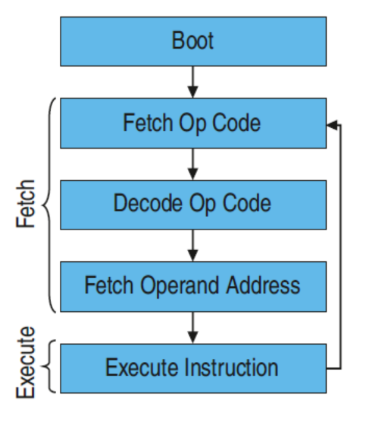
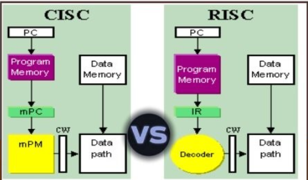

La CPU

La CPU (Central Processing Unit) è il componente principale di un computer responsabile dell'esecuzione delle istruzioni e del controllo delle operazioni.
È spesso definita il "cervello" del computer.
Svolge due funzioni:
sovrintende a tutte le operazioni del
sistema (generando i segnali necessari al
funzionamento dei circuiti a esso
collegati)
esegue i calcoli aritmetici e logici.
Componenti principali della CPU:
l’unità di controllo (CU, Control Unit): coordina le operazioni del
computer, interpreta le istruzioni e gestisce il flusso di dati tra le diverse parti del sistema.
l’unità aritmetico logica (ALU, Arithmetic Logic Unit): esegue operazioni aritmetiche e logiche.
memoria interna: formata da diverse celle di memoria dedicate a scopi
specifici, chiamati registri di memoria.
Il ciclo macchina

Il ciclo macchina è il processo attraverso il quale la CPU esegue le istruzioni. Esso si articola in tre fasi principali:
Fetch: recupero dell'istruzione dalla memoria.
Decode: decodifica dell'istruzione per determinarne il significato.
Fetch operatori:la CPU identifica l'operazione da eseguire (es. ADD, SUB) e prepara l'unità aritmetico-logica (ALU).
Fetch operandi:la CPU recupera i dati necessari (operandi) dalla memoria o dai registri.
Execute: esecuzione dell'istruzione da parte della CPU.
Brevemente: La CU inizia con il prelevamento dalla memoria
del codice macchina dell’istruzione da
eseguire.
L’istruzione prelevata viene trasferita in un
registro specifico e quindi codificata. Dopo
aver codificato, cioè tradotto l’istruzione, la
CPU emette i segnali necessari all’esecuzione
dell’istruzione.
L'architettura interna della CPU

L'architettura interna della CPU comprende vari componenti chiave che lavorano insieme per eseguire le istruzioni. Tra questi componenti troviamo:
Unità di controllo: coordina tutte le operazioni della CPU.
PC (Program Counter): contiene l’indirizzo della prossima istruzione da eseguire.
IR (Instruction Register): memorizza l'istruzione attualmente in esecuzione.
PSW (Program Status Word): contiene informazioni sullo stato del programma e della CPU.
MAR (Memory Address Register): contiene l'indirizzo della cella di memoria da cui leggere o scrivere dati.
MDR (Memory Data Register): contiene i dati letti dalla memoria o da scrivere nella memoria.
ALU (Arithmetic Logic Unit): esegue operazioni aritmetiche e logiche.
Registri:memorizzano temporaneamente dati e risultati intermedi.
Bus indirizzi: trasmette gli indirizzi delle celle di memoria.
Bus dati: trasmette i dati tra i vari componenti della CPU e la memoria.
Bus controllo: trasmette segnali di controllo tra i vari componenti della CPU.
CISC e RISC

Le architetture CISC (Complex Instruction Set Computer) e RISC (Reduced Instruction Set Computer) rappresentano due approcci diversi alla progettazione delle CPU.
CISC: Le CPU CISC sono progettate per eseguire un set complesso di istruzioni, che possono eseguire operazioni complesse in un'unica istruzione. Questo approccio riduce il numero di istruzioni necessarie per eseguire un compito, ma può rendere la CPU più complessa e lenta nell'esecuzione di istruzioni semplici.
RISC: Le CPU RISC, d'altra parte, utilizzzano un set ridotto di istruzioni semplici, che possono essere eseguite molto rapidamente. Questo approccio semplifica la progettazione della CPU e può portare a prestazioni migliori per operazioni semplici, ma richiede più istruzioni per compiti complessi.